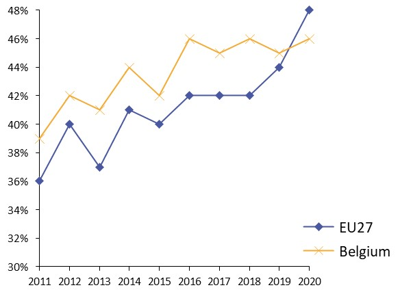
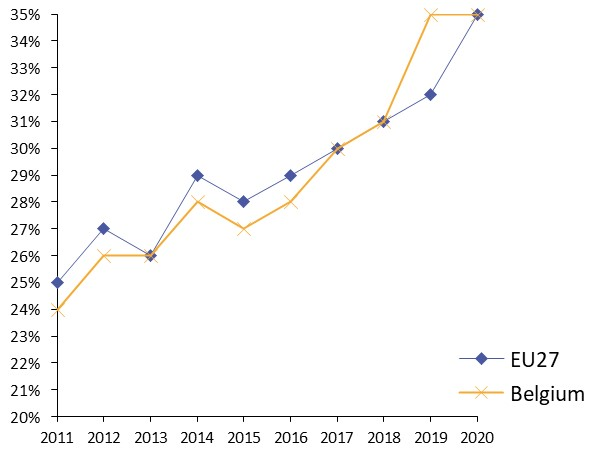
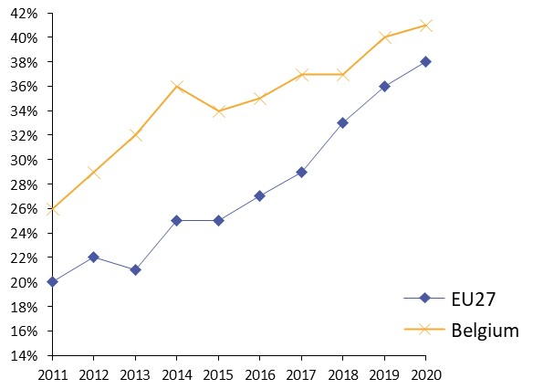
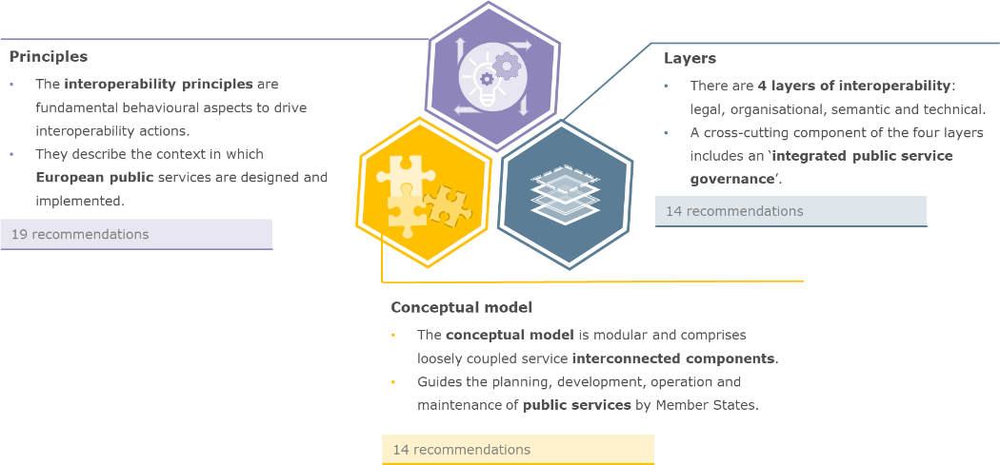
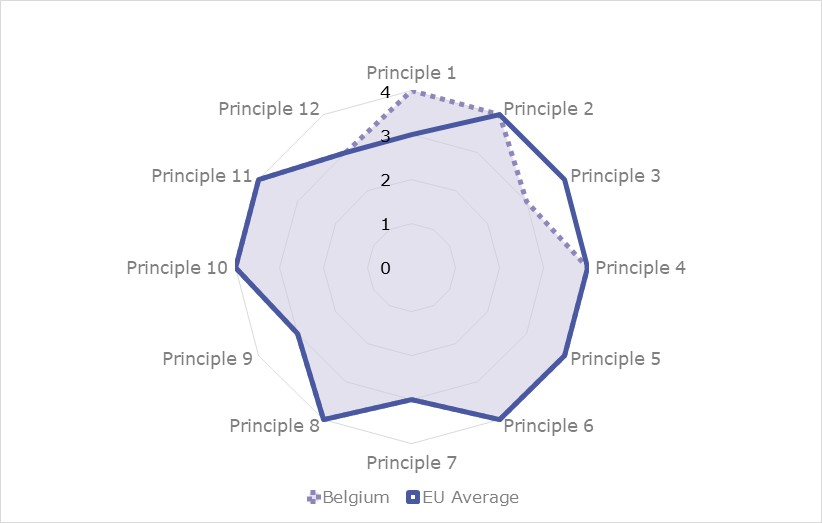
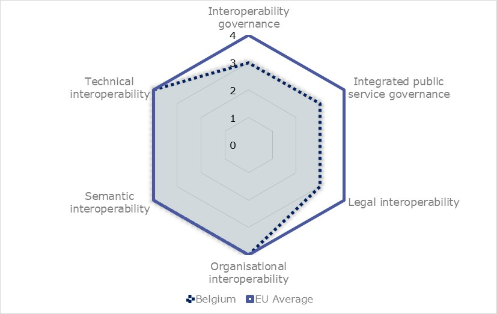
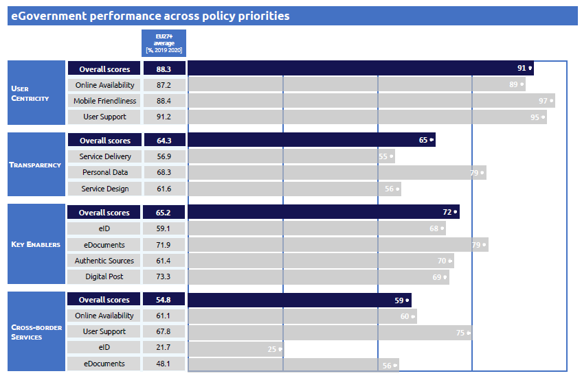

Digital Public Administration factsheet 2021
Belgium
Digital Public Administration factsheet 2021
Table of Contents
2 Digital Public Administration Highlights 10
3 Digital Public Administration Political Communications 12
4 Digital Public Administration Legislation 22
5 Digital Public Administration Governance 28
6 Digital Public Administration Infrastructure 38
7 Cross border Digital Public Administration Services for Citizens and Businesses 49
Please note that the data collection exercise for the update of the 2021 edition of the Digital Public Administration factsheets took place between March and June 2021. Therefore, the information contained in this document reflects this specific timeframe.
Country
Profile
1
Country Profile
Basic data
Population: 11 488 980 inhabitants (2020)
GDP at market prices: EUR 471 177 million (2020)
GDP per inhabitant in PPS (Purchasing Power Standard EU 27=100): 117 (2020)
GDP growth rate: -6.3% (2020)
Inflation rate: 0.4% (2020)
Unemployment rate: 5.6% (2020)
General government gross debt (Percentage of GDP): 114.1 (2020)
General government deficit/surplus (Percentage of GDP): -9.4 (2020)
Area: 30 688 km2
Capital city: Brussels
Official EU language: Dutch, French and German
Currency: Euro
Source: Eurostat (last update: 20 July 2021)
Digital Public Administration Indicators
The following graphs present data for the latest Generic Information Society Indicators for Belgium compared to the EU average. Statistical indicators in this section reflect those of Eurostat at the time the Edition is being prepared.
Percentage of individuals using the internet for interacting with public authorities in Belgium | Percentage of individuals using the internet for obtaining information from public authorities in Belgium |
|  |
Percentage of individuals using the Internet for downloading official forms from public authorities in Belgium | Percentage of individuals using the Internet for sending filled forms to public authorities in Belgium |
 |  |

Interoperability State of Play
In 2017, the European Commission published the European Interoperability Framework (EIF) to give specific guidance on how to set up interoperable digital public services through a set of 47 recommendations. The picture below represents the three pillars of the EIF around which the EIF Monitoring Mechanism was built to evaluate the level of implementation of the EIF within the Member States. It is based on a set of 71 Key Performance Indicators (KPIs) clustered within the three main pillars of the EIF (Principles, Layers and Conceptual model), outlined below.

Source: European Interoperability Framework Monitoring Mechanism 2020

Source: European Interoperability Framework Monitoring Mechanism 2020

Source: European Interoperability Framework Monitoring Mechanism 2020

Source: European Interoperability Framework Monitoring Mechanism 2020
eGovernment State of Play
The graph below presents the main highlights of the latest eGovernment Benchmark Report, an assessment of eGovernment services in 36 countries: the 27 European Union Member States, as well as Iceland, Norway, Montenegro, the Republic of Serbia, Switzerland, Turkey, the United Kingdom, Albania and Macedonia (referred to as the EU27+).
The study evaluates online public services on four dimensions:
- User centricity: indicates the extent to which a service is provided online, its mobile friendliness and its usability (in terms of available online support and feedback mechanisms).
- Transparency: indicates the extent to which governments are transparent about (i) the process of service delivery, (ii) policy making and digital service design processes and (iii) the personal data processed in public services.
- Cross-border services: indicates the extent to which users of public services from another European country can use the online services.
- Key enablers: indicates the extent to which technical and organizational pre-conditions for eGovernment service provision are in place, such as electronic identification and authentic sources.
The 2021 report presents the biennial results, achieved over the past two years of measurement of all eight life events used to measure the above-mentioned key dimensions. More specifically, these life events are divided between six ‘Citizen life events’ (Career, Studying, Family life, measured in 2020, and Starting a small claim procedure, Moving, Owning a car, all measured in 2019) and two ‘Business life events’ (Business start-up, measured in 2020, and Regular business operations, measured in 2019).

Source: eGovernment Benchmark Report 2021 Country Factsheets

Digital Public Administration Highlights
2
Digital Public Administration Highlights
Digital Public Administration Political Communications
In June 2020, a new Strategic Plan of the Steering Organization of the Flemish Information and ICT Policy was adopted by the Flemish government. The plan outlines the priorities with regards to information and ICT policy for the Flemish administration and local authorities for the period 2020-2024.
In February 2021, the Federal Public Service Policy and Support renewed the agreement with Belgian Mobile ID, the developer of the mobile identity app ITSME, for a period of three years. This agreement follows the federal government’s intention to continue engaging in public-private partnerships.
In February 2021, new measures have been put forward to reinforce the impact of DigitalWallonia4AI. The program now revolves around four strategic axes: (1) Society and AI; (2) Companies and AI; (3) Training and AI; and (4) Partnership, Innovation, Research and AI.
Digital Public Administration Governance
The Walloon Government has decided to set up a CIO function for the Walloon Public Service, in charge of addressing the challenges related to digital administration. This is a major strategic decision in the context of the digital transformation of the Walloon administration.
Digital Public Administration Infrastructure
At the beginning of 2021, the eGovernment portal of the Walloon Public Service has been expanded with new features, including online payment and enhancement of the electronic processing service. Furthermore, the portal presents a new UX design, based on the user experience, that will guarantee a better accessibility through mobile devices. The Walloon portal is now connected to eBox and will be integrated with other Belgian portals such as My MinFin and MySanté as from July 2021.

Digital Public Administration Political Communications
3
Digital Public Administration Political Communications
Specific Political Communications on Digital Public Administration
- Digital economy;
- Digital infrastructure;
- Digital skills and jobs;
- Digital trust and digital security; and
- Digital government.
A number of new initiatives were introduced. The Start-up Plan, for example, was a concrete first step to encourage young and beginner entrepreneurs to set up new businesses in innovative sectors via initiatives such as tax shelters for start-ups and fiscal incentives for crowdfunding. Another initiative aimed to roll out eInvoicing for suppliers. Further initiatives are to be launched, such as the National Alliance for Digital Skills and Jobs, a plan for a high-speed internet roll-out, the Digital Health Valley, the Digital Act (a series of legislative proposals enabling, among other things, the use of electronic signatures and digital archiving, in order to replace paper-based solutions), the deployment of the federal cloud, a mobile authentication for eGovernment applications, a multi-directional digital communication platform and an open data strategy.
Federal eGovernment Strategy for the Social Sector (2009−present)
The Federal eGovernment Strategy for the social sector aims to create a single virtual public administration while respecting the privacy of users, as well as the specificities and competences of all government bodies and administrative layers.
Its main objective is to improve the delivery of public services for citizens and businesses by rendering it faster, more convenient, less constraining and more open.
The current strategy is outlined as follows:
- Formulation of specific objectives, such as optimal service delivery to citizens, limitation of administrative burden and optimisation of the efficiency and effectiveness of public services;
- Explicit choice to opt for stakeholders’ collaboration in order to create added value for users of eGovernment services;
- Common vision for the use of information in terms of information modelling, mandatory reporting of supposed errors, electronic exchange of information, single collection of information;
- Use of a common vision for information security and protection of privacy;
- Maximum use of common elements for networks, eID, interconnected middleware and related basic services;
- Role of the Crossroads Bank for Social Security (CBSS) as driver for eGovernment development in the social sector; and
- Establishment of a strong partnership among all social security institutions.
To meet the above-mentioned objectives, the Belgian eGovernment Strategy was based in the past on four main strategic streams:
- 1st stream: re-engineering and integrating service delivery.
This first stream focused on user needs, life events and simplification of all administrative procedures.
- 2nd stream: cooperation among all levels of government to provide integrated services across organisational boundaries and administrative layers.
The second stream was based on two documents. The first one, the eGovernment Cooperation Agreement, was signed in March 2001 by the federal, regional and local authorities. It laid down a cooperation framework according to which all layers of government committed to using the same standards, the same identification infrastructure and the same eSignature. The second one, the Cooperation Agreement on the Principles of a Seamless eGovernment, signed in April 2006, set the objective of using those information and communication technologies (ICTs) that provide information to all citizens, businesses and public institutions in a user-friendly way.
- 3rd stream: simplification of administrative procedures for citizens and businesses, which requires an increased exchange and sharing of both data and information among government departments and agencies.
- 4th stream: back office integration and protection of personal data.
The department or agency requiring specific data will be considered most frequently as a trusted source by other administrations that may need such data. Hence, the department or agency in question will be responsible for maintaining a personal data repository.
Communication Campaign on eBox
In February 2019, a new law introduced eBox. eBox is an electronic mailbox that can be used by public actors to send electronic communications to Belgian citizens and registered companies and organisations, including registered mail. During the second half of 2019, the Belgian government developed a communication campaign on social media to promote private partners in the eBox ecosystem. These private partners offer to their clients the possibility to consult government documents with their applications. During this campaign, the following partners were promoted: Doccle, bpost bank, Trusto. In December 2019, the government released a communication campaign on national television and radio aimed to raise awareness around eBox. In 2020, the Flemish government and local governments also started to use the eBox as their electronic mailbox for sending official government documents.
Digital Wallonia (2015 − present)
On 6 December 2018, the Walloon government adopted the second version of its Digital Wallonia Strategy for the period 2019−2024. The strategy set the direction to allow the region of Wallonia to seize the socio-economic opportunities of the digital transformation. Just like the first version of 2015, which was based on the contributions of more than 100 actors and organizations, Digital Wallonia 2019−2024 is the result of the work of the Digital Wallonia Champions.
This strategy is structured around five major goals:
- Digital sector: the goal is to create a strong technological sector by means of a growth programme, which aims to give Wallonia’s digital sector an international dimension;
- Digital economy: the goal is to increase the digital capabilities of companies, which is essential for the development of connected commerce;
- Connected and intelligent territory: the goal is to achieve full high-speed connectivity in Wallonia;
- Open utilities: the goal is to foster open and transparent digital public services; and
- Skills and employment: the goal is developing Wallonia’s citizens’ digital skills.
More than 20 projects have been implemented as part of the Digital Wallonia Strategy. For example, Digital Wallonia 4 AI is now the roadmap for the development of Artificial Intelligence. Moreover, while Digital Wallonia Industry of the Future is the framework for the adoption of the industry 4.0 by factories of the manufacturing sectors, Digital Wallonia Giga Region defines the priorities to offer high-speed fixed and mobile networks to all citizens and companies in Wallonia.
The strategy marked the Walloon government’s stated ambition to transform Wallonia into a connected and smart territory, where technological companies are recognised as leaders and as the driving force behind the region’s successful industrial transformation.
In 2019, the new regional government confirmed Digital Wallonia as the digital roadmap for Wallonia. Consequently, the Digital Wallonia Strategy is now fully integrated into the political declaration of the Walloon government.
Master Plan and Digital Vision of the Ministry of the Wallonia-Brussels Federation
In May 2016, the Belgian government signed the first Master Plan of the Ministry of the Wallonia-Brussels Federation (MFWB). This Master Plan for public services represented a first-time effort to set up a global, integrated and consistent roadmap with precise goals, proper governance and adequate funding.
The digital part of the Master Plan is divided into eight areas, which constitute the pillars of the government’s digital vision. The first pillar aims to work on the user experience, which includes both external users of the public service (e.g., citizens, non-marketers) and internal users. The second pillar concerns data, which represent a relevant component of the entire digital approach. The third pillar is mainly internal and focuses on the digital workplace. The fourth pillar is dedicated to innovation. The fifth pillar concerns digital governance. The sixth pillar targets the digital culture of the organisation, including the acquisition of digital skills and management changes . The seventh pillar is devoted to the necessary resources, including the IT infrastructure. The eighth and most important pillar is the digital platform. It consists of all the IT capabilities of the MFWB.
Flanders eGovernment Strategy
As to the Flemish Region, the eGovernment Strategy is under the responsibility of the Minister-President of the Flemish government. It is managed by the Flanders Information Agency, which was created in 2015 by merging the Flemish eGovernment Coordination Cell (CORVE), the Vlaamse Infolijn (the Flemish government call-centre), the Flanders Geographical Information Agency (AGIV) and part of the Department for Administrative Affairs. This agency was responsible for the eGovernment programme Vlaanderen Radicaal Digitaal (Radically digital Flanders), an investment programme that ran from 2015 till 2017. The programme substantially increased the digital maturity of the Flemish government digital service provision. It also ensured that the Once-Only data collection principle (known in Flanders as the MAGDA principle) was adopted by the whole Flemish administration. In 2021, a follow-up investment programme, Vlaanderen Radicaal Digitaal II, has been launched that will again invest EUR 30 million in the creation of a state-of-the-art digital government.
The main responsibility of the Flanders Information Agency is to determine the strategic aims and priorities for the transformation of the Flemish government into a data-driven government, while taking part in eGovernment projects in an advisory and supportive role. The agency is also in charge of developing eGovernment-related knowledge and skills, coordinating and providing incentives, and creating a generic eGovernment infrastructure to facilitate cooperation among the different entities within the Flemish administration. This generic eGovernment infrastructure consisted of a number of eGovernment building blocks (electronic identification and trust services, electronic documents, eProcurement, authentic sources, etc.) that can be used as shared systems to improve existing (electronic) service delivery and streamline government operations. The agency provides additional funding for cross-departmental eGovernment projects (Vlaanderen Radicaal Digitaal II projects).
A key policy element in this eGovernment policy is the continued development of authentic sources of information (base registries). These are databases that can be used to obtain complete, correct and up-to-date data on businesses, natural persons, addresses, plots, buildings, maps, etc. A comprehensive system of Flemish authentic data sources and related services is still in the process of being built.
The Flemish eGovernment strategy 2014−2019 aimed to ‘radically digitally’ transform the Flemish administration, by opting for a digital-first approach in the (increasingly mobile) delivery of new (or existing) Flemish government services. The new Flemish eGovernment strategy 2019−2024 aims to turn the Flemish government into a state-of-the-art digital government, by becoming more data-driven and further adopting the Once-Only principle to proactively deliver digital services to citizens and enterprises.
eGovernment Strategy of the Brussels-Capital Region
In May 2014, after the elections, the government unveiled its policy. Highlights included:
- Brussels Smart City: make Brussels the digital capital;
- progressing as much as possible in terms of online administrative management;
- hotspots at every public transport stop; and
- extension and simplification of Irisbox, the regional one-stop-shop.
In July 2019, the Brussels government brought forward the new policy that, among other digital measures, seeks to address inequalities and poverty by automatically granting derivative rights resulting from the social status of the citizens. Furthermore, the new policy includes an entire section on the ambition of the Brussels Region to become a smart city. The transition towards becoming a smart city has multiple purposes:
- to democratise the access to digital wealth;
- to improve the quality, the performance and the synergies across public services;
- to reduce the costs and the consumption of available resources; and
- to streamline and improve the interactions between citizens and public administration.
Strategic Plan of the Steering Organization of the Flemish Information and ICT Policy
In June 2020, a new Strategic Plan of the Steering Organization of the Flemish Information and ICT Policy was adopted by the Flemish government (VR 2020 2606 DOC.0643/1). The plan outlines the priorities with regards to information and ICT policy for the Flemish administration and local authorities for the period 2020−2024. The plan also implements the Vlaanderen Radicaal Digitaal II Investment Programme which will be used from 2021 on to pursue the objectives of this strategic plan. The management and follow-up of the Strategic Plan is under the responsibility of the Steering Body of the Flemish Information and ICT Policy. To this end, a new organization was foreseen for this Steering Body.
Berlin Declaration on Digital Society and Value-Based Digital Government
In December 2020, the Belgian government signed the Berlin Declaration on Digital Society and Value-Based Digital Government, thus re-affirming its commitment – together with other EU Member States – to foster digital transformation in order to allow citizens and businesses to harness the benefits and opportunities offered by modern digital technologies. The Declaration aims to contribute to a value-based digital transformation by addressing and strengthening digital participation and digital inclusion in European societies.
Interoperability
In line with the revised European Interoperability Framework (EIF), the Belgian federal government and the regions have agreed to use the 12 principles of the EIF as the basis for defining their interoperability.
A number of recommendations are derived from these principles. The 47 recommendations are also endorsed within the context of BelgIF, as a valuable foundation to define the architecture, applications and solutions for data exchange and interoperability within and between the federal government, the communities, and the regions.
The main integrators supporting the implementation of BelgIF are the Flanders Information Agency, the Banque Carrefour d'Échange de Données, the Crossroads Bank for Social Security, Federal Public Service BOSA, eHealth portal, and FIDUS.
The BelgIF website also lists the main building blocks enabling and supporting interoperability in the country: the G Cloud, Federal Service Bus, FedMAN, eBirth, and CSAM.
Digital Transformation Office Strategy
Within the Federal Public Service for Policy and Support, the Digital Transformation Office (DTO) implements the Belgian Digital Agenda, which is based on the EU Digital Agenda 2020.
Functions & Services
The Digital Transformation Office’s main functions are:
- to support federal government on digitalisation;
- to be a driving force for the innovation and digital transformation of the federal government; and
- to advise on technology and projects from an enterprise and citizen-centric perspective.
The Digital Transformation Office’s main services are:
- developing the digital strategy and standards for the federal government;
- executing and monitoring the digital transformation of the federal government;
- developing cross-cutting digital services and platforms such as digital communication services, life events, operations and infrastructure services; and
- overseeing the G-Cloud strategic board and committees while reporting to the federal government.
EIRA
In order to support this strategy, the DTO, together with the Belgian regional governments, adopted the EIF as reference for BelgIF. The DTO mapped their architecture based on the European Interoperability Reference Architecture (EIRA).
This has allowed the DTO to:
- communicate the DTO enterprise architecture in a standardised way;
- detect gaps in existing DTO architecture;
- make use of the available Solution Architecture Templates to complete the DTO architecture; and
- compare the DTO architecture with the architecture of other Belgian and EU partners (provided their architecture is also built according to EIRA), and in this way, detect gaps and overlaps between different architectures.
Key enablers
Access to Public Information
Charter on Open Data Use by Local Authorities
The Smart Flanders Initiative included the Open Data Charter, which established 20 principles, such as open-by default and machine-readable data, enabling local authorities to foster an open data ecosystem.
The Open Data Charter was approved in the summer of 2018 and ratified by 13 Flemish cities. To translate the Charter into practice, a dedicated document was developed with sample clauses to be used in tenders, concessions and contracts in order to make arrangements with suppliers about (Linked) open data. The use of these formulations was recommended, so as to strive for a more joint approach to open data.
eID and Trust Services
No political communication has been adopted in this field to date.
Security Aspects
Strategic Plan 2019−2025
On 12 December 2019, the Belgian Data Protection Authority (DPA) released its Strategic Plan for the period 2019−2025. In the plan, the Belgian DPA described its vision for the years to come, defining its priorities and strategic objectives and listing the necessary means to achieve said objectives.
The Belgian DPA will focus its actions on five sectors:
- telecom and media;
- public institutions;
- direct marketing (including data brokers);
- education; and
- SMEs.
The Belgian DPA indicated that its actions will focus on the following aspects of Regulation 2016/679/EU:
- the role of the data protection officer (DPO);
- the lawfulness of data processing activities; and
- data subjects’ rights, specifically the scope of some of these rights.
The societal priorities addressed by the Strategic Plan are the following:
- pictures and cameras;
- online data protection; and
- sensitive data (such as biometric data, health data, etc.).
Interconnection of Base Registries
No political communication has been adopted in this field to date.
eProcurement
eInvoicing Measures
Several measures to promote electronic invoicing have been taken by the various levels of Belgian government. From 1 November 2020, only electronic invoices are accepted for all public contracts awarded by the administrations and public organisations of the Brussels-Capital Region. All eInvoices sent to the Flemish government pass through Mercurius. In addition, the Flemish authorities have appointed a project team to coordinate the regional and local deployment of eInvoicing.
Wallonia and the Wallonia Brussels Federation have entrusted eWBS (e-Wallonie-Bruxelles Simplification) with the implementation of promotional and awareness-raising activities for electronic invoicing. This service invites Walloon and local administrations to register on the Mercurius platform in order to receive their invoices electronically.
Domain-Specific Political Communications
ITSME Agreement
In February 2021, the Federal Public Service Policy and Support renewed the agreement with Belgian Mobile ID, the developer of the mobile identity app ITSME, for a period of three years. This agreement responds to the federal government’s intention to continue engaging in public-private partnerships. The use of the mobile identity app represents a win-win result for all stakeholders with the final objective of developing a future-oriented ecosystem.
eHealth Action Plan 2019−2021
On 28 January 2019, the Inter-ministerial Conference for Public Health (Conférence interministérielle Santé publique, CIP SP) approved the eHealth Action Plan for 2019−2021. By approving this plan, the eight ministers that participated to the CIP SP reinforced their commitment to the digital transformation of the Belgian healthcare system.
The eHealth Action Plan is based on four main principles:
- Development of cooperation at the federal level on topics related to eHealth;
- Research of synergies among existing projects;
- Focus on operational efficiency; and
- Enhanced interest for European initiatives related to eHealth.
More information on the eHealth Action Plan for 2019−2021 can be found here.
Emerging technologies
Digital Wallonia 4 AI
Following its launch in 2019, the main goal of Digital Wallonia 4 AI became to speed up the adoption of AI in Wallonia and develop the Walloon ecosystem around this new technology. The strategy is supported, among others, by the AI Network, Agoria, Infopôle Cluster TIC and the Wallonia Digital Agency.
The programme includes practical actions to support companies that want to incorporate AI into their business model by developing prototypes. In this regard, an important component of the programme is the support to businesses through awareness-raising and training initiatives.
For the first two years, the strategy was based on two main streams:
- Start AI: an analysis of the company's activities and identification of AI opportunities to improve the business process and create new products or services; and
- Springboard AI: implementation of Proof of Concepts (PoCs) on AI.
In 2021, new measures have been put forward to reinforce the impact of DigitalWallonia4AI. The programme now revolves around four structuring axes:
- Society and AI;
- Companies and AI;
- Training and AI; and
- Partnership, innovation, research and AI.
Each axe foresees numerous initiatives, such as awareness-raising activities, training from beginner to advanced level, marketing support, call for projects and ecosystem cartography. Within the Digital Wallonia 4 AI strategy, the TRAIL consortium aims to provide businesses with the expertise and tools developed by the five Walloon universities and four approved research centres active in the AI field.
Flanders’ Action Plan on Artificial Intelligence
The Flemish Minister for Innovation, Philippe Muyters, has made EUR 32 million available in the coming years to put Flanders at the forefront for AI. The funds have been injected into the Flemish economy through a dedicated Flemish AI Action Plan, signed in March 2019.
The Flemish AI Plan is made up of three major components, namely research, applications in companies and a supporting policy on education, awareness-raising and ethics:
- Research: money will be invested in strengthening the internationally renowned Flemish AI research programmes. Special attention will be given to leading AI technology platforms with clear market potential;
- Industry applications: according to the action plan, Flanders can be at the forefront for the application of AI in the business world. It aims to achieve this goal by acting as a laboratory for Flemish and international AI applications; and
- Education, awareness and ethics: in Flanders, there is a need for broad awareness about the disruptive potential of AI technology. The action plan foresees several training programmes as well as the setting up of a dedicated AI think-tank to address the ethical implications that AI entails.
- Policy support on ethics, regulation, skills and competences;
- Providing a Belgian AI cartography;
- Co-animating the Belgian AI community;
- Collecting EU funding and connecting EU ecosystems;
- Proposing concrete action for training in AI;
- Contributing to the uptake of AI technologies by the industry; and
- Promoting new products and services based on AI technologies.
G-Cloud Programme
The G-Cloud Programme is the result of a joint initiative of several public institutions: federal public services, social security institutions and the care sector. The Cloud Governance Board controls its implementation.
The development of this government-based community cloud is laid out in a joint roadmap. The first-generation G-Cloud services became operative in March 2015 and many improvements are still being implemented.
The G-Cloud is a hybrid cloud service which uses services provided by private companies operating in public cloud environments and services hosted in government datacentres. The G-Cloud is managed by the government. Its expansion and operational functioning largely rely on private sector services.
The G-Cloud services operate in four different domains. The services offer is gradually being extended and improved, based on the actual needs of the participating institutions. Infrastructure-as-a-Service (IAAS), Platform-as-a-Service (PAAS) and Software-as-a-Service (SAAS) are all included. The G-Cloud programme will also encompass synergy initiatives undertaken by the government in the field of classic ICT. New services will be added upon availability.
'Hard' infrastructure services ensure that government applications are able to run in a reliable physical environment including data-centre housing, servers and storage. The complete virtual capacity can be flexibly modified in a fully managed IAAS environment. These services are supplemented by a soft infrastructure, which allows for high-quality back-ups, security and identity as well as authorisation management.
PAAS services mainly focus on developing the new software generation, namely cloud-enabled and cloud-native applications using the latest architecture. Generic online applications via Software-as-a-Service for translations, document management, website management and IT service management, among others, are a priority.
European Infrastructure for Blockchain Services
Belnet is actively participating in the construction of and will co-organise a series of events in 2021, with the aim of informing and meeting the Belgian blockchain community. The first event took place on 24 February 2021. These events are the result of a collaboration between Belnet, Smals, FPS BOSA and KU Leuven who have formed a Belgian consortium whose objective is to deepen the use of blockchain technologies in the fields of research, education and public services.

Digital Public Administration Legislation
4
Digital Public Administration Legislation
Specific Legislation on Digital Public administration
Governance Framework for the Digital and Information Technology Policy
On 25 October 2018, the Parliament of the French Community adopted key legislation on the governance framework for the digital and information technology policy. The governance framework is an important piece of legislation, as:
- It defines general principles for the digital government transformation;
- It establishes a strategic council for digital transformation;
- It gives a legal basis to the governance structures; and
- It establishes a five-year strategic plan for digital and IT development in the French community.
Interoperability
No legislation has been adopted in this field to date.
Key enablers
Access to Public Information
Law on the Right of Access to Administrative Documents
The right of access to documents held by the public sector is guaranteed by Article 32 of the Belgian Constitution and by the Law of 11 April 1994. It was amended in 1994 to provide everyone with the right to consult any administrative document and get a copy, except in the cases and conditions stipulated by the laws, decrees or rulings referred to in Articles 39 and 134. Government agencies must respond immediately, or within thirty days in case the request is delayed or rejected.
The 1997 Law, related to the publication of information by provinces and municipalities, provided for the same type of transparency obligations for provinces and municipalities. Furthermore, the Flanders Region/Community (lastly amended in 2007), the French Community (lastly amended in 2007) and the Brussels-Capital Region (lastly amended in 2010) have also adopted their own legal acts on the right of access to administrative documents.
Law on the Reuse of Public Sector Information
The Law of 4 May 2016, adopted at federal level to replace the Law of 7 March 2007, transposed into Belgian law the general principles governing the re-use of public sector information in line with the provisions of the of the European Parliament and of the Council of 26 June 2013, amending Directive 2003/98/EC on the re-use of public sector information.
Royal Decree Establishing the Procedures and Time Limits for the Handling of Requests for Public Sector Information Reuse
The Royal Decree of 2 June 2019 regulated formal aspects related to the procedure and timelines for handling requests for public sector information re-use. In addition, regional and community governments too were required to transpose the directive on the re-use of public sector information. Flanders, the Brussels-Capital Region and the French and German-speaking Communities also have their own decrees which were inspired from the relevant federal legislation. In 2016, the existing Flemish decree on re-use of public sector information was adapted, to be in line with the new European directive.
Open Data Decree of Wallonia and Wallonia-Brussels Federation
On 12 July 2017, the Walloon Parliament adopted the Open Data Decree of the Walloon government and the Wallonia-Brussels Federation. Following this decree, public administrations will open their data in digital format so that they can be reused easily, whether by citizens, companies or the administrations themselves, such as local authorities.
eID and Trust Services
Law on Electronic Identification
The Belgian Law on Electronic Identification, dated 18 July 2017, completed the eIDAS Regulation. Under the new law, the following procedures applied:
- each Belgian public-sector body determined the required assurance level to grant access to its services and transmitted this information to the Digital Transformation Office (DTO);
- the DTO determined the assurance level of the Belgian electronic identification means to be notified to the European Commission and notified two Belgian electronic identification schemes; and
- the DTO, designated as the Belgian hub for IT cross-border exchange, transfers a minimum set of person identification data to the node of another Member State when a user wants to access an online service in that second Member State.
To enable mobile identification, the Federal Public Service Policy and Support (FPS P&S) drew up the Royal Decree of 22 October 2017, which set out the rules governing the recognition of private electronic identification services, and in particular mobile services. Working with private partners allowed the government to keep costs under control and foster innovation. These external identification services, developed and operated by private sector companies, were added to the CSAM platform devised by the FPS P&S and complemented the already existing set of digital keys.
Legal Framework on Trusted Services
The eIDAS Regulation, Regulation 910/2014/EU on electronic identification and trust services for electronic transactions in the internal market, was completed by several clauses in book XII of the Economy Code.
It is worth mentioning that on a regional level, a law on electronic forms and eID card signature of December 2006, as well as two related decrees of July 2008 were adopted by the Walloon Parliament and the Walloon government respectively. These decrees gave to electronic forms the same legal value as paper forms.
Moreover, the legal framework for the use of electronic identity cards was set in a series of royal and ministerial decrees, among others: (i) the Law and the Royal Decree of 25 March 2003 on the legal framework for electronic ID cards; (ii) the Ministerial Decree on the Format of Electronic ID Cards of 26 March 2003; (iii) the Royal Decree on the Generalisation of Electronic ID Cards of 1 September 2004; and (iv) the Royal Decree on the eID Document for Belgian Children under 12 of 18 October 2006.
Law on the Use of Electronic Signature in Judicial and Extra-Judicial Proceedings
A law dating 20 October 2000 introduced the use of the electronic signature within judicial and extra-judicial proceedings. It was the first law to address the eSignature issue in Belgium. The law was lastly amended in September 2006.
Security Aspects
Flemish Data Protection Decree
Adopted on 8 June 2018, the Flemish Data Protection Decree adapted existing Flemish decrees to the new legal rights and obligations introduced by the General Data Protection Regulation (EU) 2016/679.
Law on the Protection of Private Life with regard to the Processing of Personal Data
The General Data Protection Regulation 2016/679/EU was completed by the new act of 3 December 2017 establishing the data protection authority and by the new act of 30 July 2018 on the protection of natural persons with regard to the processing of personal data.
Law on the Establishment of a Security Framework for the Information Systems Having General Interest
Adopted on 7 April 2019, the new Law on the Establishment of a Security Framework for the Information Systems Having General Interest transposes at federal level the EU Directive 2016/1148 (NIS Directive). It aims at enhancing the cybersecurity measures put in place by the public and private organisations that provide essential and digital services to the community. The transposing law sets obligations for providers of specific essential services and digital services related to technical and organizational security measures in order to avoid incidents or limit their impact. Furthermore, it specifies the requirements for the development of security policies in accordance with ISO/IEC 27001. The law also foresees reporting obligations in case of incidents, annual audit obligations and the requirement to designate a contact point for reaching competent authorities.
Interconnection of Base Registries
Law on eBox
The law of 15 August 2015 on the incorporation and organisation of a federal service integrator organized the communication and integration of data from different data sources and promoted single data collection, central registration and access.
The eBox Law of 28 February 2019 stipulated the provisions concerning eBox, an electronic mailbox that can be used by public actors to exchange electronic communications with Belgian citizens and registered companies and organisations, including registered mail. The Royal Decree of 2 June 2019 stipulated the conditions for private service providers to be accredited to make the eBox available to citizens.
As to the Walloon Region, the Decree of 27 March 2014 regarding electronic communications was amended in 2020, allowing the public administrations of the region to use the eBox system.
Flemish Public Governance Decree
Adopted on 7 December 2018, the Flemish Public Governance Decree significantly streamlined and simplified the digital government framework. The decree incorporated previously separate decrees on the Steering Committee for Flemish Information and ICT policy, on electronic intergovernmental data exchange and on the re-use of public sector information.
This decree, amongst other topics, dedicated extensive attention to the use of base registries and the adoption of the Once-Only principle by Flemish as well as local administrations. The decree defined the criteria for the recognition of Flemish base registries and specified how to manage them. It introduced the once only obligation to use base registries in Flemish administrative processes (citizens may refuse to give their data more than once), with the obligation to notify back any errors found in these base registries. The decree is now being adapted to take into account the new obligations introduced by Directive (EU) 2019/1024 on open data and the re-use of public sector information.
eProcurement
Law on Public Procurement and Several Public Works Contracts, Public Supply Contracts and Public Service Contracts
The Law of 17 June 2016 on Public Procurement, published in the Belgian Monitor of 14 July 2016, was last amended by the Law of 7 April 2019. The changes concerned the inclusion of the definition of eInvoice as well as its essential elements. The new law provided several amendments to the third chapter of the Law of 17 June 2016 concerning Concession Contracts.
eInvoicing Legislation
In Belgium, the responsible entity for eInvoicing is the Federal Public Service Policy. However, other public services at federal and regional levels may share part of the responsibility.
There is no overall legislation in place for the country as a whole. In Flanders, B2G eInvoicing is mandatory for regional contracting authorities. At federal level, the Law of 7 April 2019, published in the Belgian Monitor of 16 April 2019 and transposing Directive 2014/55 into national law, requires contracting authorities to receive and process electronic invoices, following the European standard.
Despite not being mandatory, economic operators are encouraged to submit eInvoices, and central, regional as well as local contracting authorities and entities are encouraged to receive them.
A website has been created by the federal Agency for administrative simplification to guide enterprises, private persons and governments through the concept of electronic invoicing and its future applications.
In 2016, the European Interoperability Framework PEPPOL was implemented in Belgium, with the Directorate-General Digital Transformation of Federal Public Service Policy and Support (FPS P&S) taking up the roll of PEPPOL Authority (PA) for Belgium.
The central gateway between private and public sectors (B2G) is the Mercurius platform, which acts as an electronic mailroom for invoices sent to all Belgian public entities. This platform is accompanied by a web portal, which allows public service suppliers who have not yet adopted e-Invoicing to send their electronic invoices in the required structured format. For the receipt of incoming invoices, the Flemish Region has decided to collaborate with the federal level and to also use the Mercurius platform.
At federal level, the Hermes Platform will be made available to companies in Belgium. This free tool will allow them to convert electronic XML invoices to PDF format. This should be seen as an incentive to initiate structured exchanges, while waiting for the IT sector to develop the appropriate reception and processing tools and market them in attractive terms.
Law on the Acceptance of Bids, Information to Candidates and Tenderers, and Time Limits on Public Procurement and Several Public Works Contracts, Public Supply contracts and Public Service Contracts
The , related to public procurement, was amended several times over the last few years.
It transposed into Belgian law the EU Directives on public procurement, the Directive 2014/25/EU of the European Parliament and of the Council of 26 February 2014 on procurement by entities operating in the water, energy, transport and postal services sectors and repealing Directive 2004/17/EC, Directive 2014/24/EU of the European Parliament and of the Council of 26 February 2014 on public procurement and repealing Directive 2004/18/EC, and Directive 2014/23/EU of the European Parliament and of the Council of 26 February 2014 on the award of concession contracts. They defined the use of electronic tools in public procurement and concession contracts, such as electronic publications of tender opportunities, electronic accessibility of procurement documents, electronic submissions of tenders, acceptance of electronic invoices and electronic means of procurement as having the same legal value as that of traditional means. In addition, they defined new concepts based on public procurement directives, more specifically electronic auctions and the Dynamic Purchasing System.
Domain-Specific Legislation
Decree on Primary Care
The new Decree on Primary Care, which was adopted by the plenary on 3 April 2019, laid down the provisions for the organisation of primary care in Flanders and introduced a digital care and support plan for patients.
Emerging technologies
No legislation has been adopted in this field to date.

Digital Public Administration Governance
5
Digital Public Administration Governance
National
Policy
Mathieu Michel Secretary of State for Digitalisation, responsible for Administrative Simplification, Privacy and the Belgian Buildings Agency Contact details: |
Directorate-General for Digital Transformation
The Directorate-General for Digital Transformation, which is part of the Federal Public Service Policy & Support, supports the government and federal organizations in their digitization drive. It is the driving force behind the evolution and the digital reforms of the federal government. This DG provides advice and develops projects in connection with the new technologies, paying particular attention to citizens and businesses.
Nico Waeyaert Chairman Federal Public Service Policy & Support Contact details: SPF BOSA WTC III DG Digital Transformation Boulevard Simon Bolivar 30, 1000 Brussels Tel.: +32 (0)2 740 74 74 E-mail: info@bosa.fgov.be Source: https://bosa.belgium.be |
Jacques Druart Director-General DG Digital Transformation a.i. Contact details: FPS BOSA WTC III DG Digital Transformation Boulevard Simon Bolivar 30 1000 Brussels Tel.: +32 2 740 74 96 e-mail: jacques.druart@bosa.fgov.be Source: https://bosa.belgium.be |
Agency for Administrative Simplification
The Agency for Administrative Simplification is responsible for drafting strategic measures for the simplification of all administrative actions imposed by the State in everyday business exchanges.
Crossroads Bank for Social Security
The Crossroads Bank for Social Security (CBSS) elaborates the eGovernment strategy within the Belgian social sector and coordinates the implementation of the eGovernment projects in this sector.
Coordination
DG Digital Transformation
The DG Digital Transformation (BOSA) helps government departments and agencies to elaborate and initiate their eGovernment projects and coordinates their implementation.
Implementation
DG Digital Transformation
Federal Departments and Agencies
Federal Departments, Ministries and Agencies are responsible for the implementation of individual or joint eGovernment projects falling within their respective areas of competence.
Support
DG Digital Transformation
The DG Digital Transformation (BOSA) provides assistance to all entities in the public sector by supporting their ICT projects.
Agency for Administrative Simplification
Created in December 1998, the Agency for Administrative Simplification assists government departments and bodies in their endeavours to simplify their administrative internal and external procedures. More specifically, it is in charge of simplifying administrative procedures for businesses, especially small and medium-sized enterprises and the self-employed.
Crossroads Bank for Social Security
BELNET
The government agency BELNET, part of the Federal Science Policy Office, provides secure Internet access with very high bandwidth to end users in education institutions, research centres and public administrations. In addition, BELNET is in charge of operating the federal network FedMAN.
Smals
Smals is a not-for-profit organisation realising IT-projects in the domains of eGovernment and eHealth. Smals is the main IT provider of the Belgian federal government and acts as a contracting authority.
| Frank Robben General Manager of the Crossroads Bank for Social Security (CBSS) and CEO of Smals Contact details: KSZ-BCSS Chaussée Saint-Pierre 375 1040 Brussels Tel.: + 32 2 741 84 02 E-mail: Management@ksz-bcss.fgov.be Source: http://www.ksz-bcss.fgov.be/ |

Interoperability Coordination
Federal Public Policy and Support
Base Registry Coordination
DG Digital Transformation
- Uniting all national service integrators (three federal and one for every region);
- Coordinating the working methods of service integrators;
- Monitoring all authoritative data disclosed by service integrators (not bilateral data exchanged between governments/departments); and
- Establishing the circle of trust between service integrators.
Federal Public Service of the Interior
The Federal Public Service of the Interior is tasked with coordinating the National Registry of Natural Persons, which handles the master personal data of natural and legal persons. The National Registry contains data from several registries: the Population Registry, the Foreigner Registry and a Waiting Registry. The municipalities (and the Immigration Office for the last category of the population) are the ones responsible for recording the information. Everyone whose data is maintained in the National Registry has a unique identification code, the national registry number. The Once-Only principle is applied to the registry. The consultation of data in the National Registry is subject to authorisation from the relevant sectoral committee established within the Commission for the Protection of Privacy, which is competent to grant access to the National Registry information or communication thereof. The National Registry is managed by the Directorate for Institutions and Population, which manages the central database in which all the information related to the population is recorded.
Federal Public Service of Mobility and Transport
The Federal Public Service of Mobility and Transport is responsible for the coordination of the Vehicle Registry, which handles master data for vehicles. In cooperation with the Vehicles Registration Directorate, the Department is also responsible for the management of the Crossroad Bank of Vehicles Registry, which handles master data of vehicles. The Vehicle Registry functions under the authority of the (federal) central government, the Vehicles Registration Directorate and the Federal Public Service for Mobility and Transport. The service has been fully integrated through the WebDIV application that allows insurance companies and car dealers to register cars online. WebDIV is an IT application developed by the Federal Public Service Mobility and Transport enabling insurance companies, agents, brokers and leasing companies to register their clients’ cars online.
Federal Public Service of Economy
The Federal Public Service of Economy is responsible for the coordination of the Crossroad Bank for Enterprises Registry, which handles master data for business. The Crossroads Bank for Enterprises (CBE) is an authentic source of information that stores all basic data regarding enterprises and their individual business locations. It incorporates data from the former National Registry of legal entities, the former Trade Registry, the VAT Registry, and the social security administration. It is kept up to date by the authorised organisations that input the data. All the existing data from the above-mentioned sources was combined by the Federal Public Service Economy in the CBE, which provides a truly centralised ‘crossroad’ of data on companies.
(Federal) Social Security
The (Federal) Social Security is responsible for the coordination of the CBSS. The CBSS Registry is complementary and subsidiary to the National Registry. Over the past seventeen years, a major business process re-engineering and computerisation effort has been undertaken by about 3 000 Belgian public and private actors in the social sector from different levels (national, regional and local), under the coordination of the CBSS.
Federal Public Service of Finance’s National Property Documentation Centre
The National Property Documentation Centre is responsible for the coordination of the Land Registry, which handles master data for land and parcels.
Audit
Court of Audit
The Court of Audit is a body of the Belgian Parliament. It exerts external control on the budgetary, accounting and financial operations of the Federal State, the regions, the communities, the provinces (but not the municipalities), as well as any institution depending on them. It can therefore scrutinise ICT and eGovernment-related projects.
Parliamentary Committees
At federal level, the ICT and eGovernment-related projects are examined by the Committee for General and Home Affairs, the Civil Service of the House of Representatives and the Committee for Home and Administrative affairs of the Senate.
Data Protection
Data Protection Authority
Since 25 May 2018, the Data Protection Authority (DPA) has replaced the Commission for the Protection of Privacy (Privacy Commission). With the Act of 3 December 2017, the DPA became the new Belgian independent supervisory authority in charge of ensuring compliance with the fundamental principles of personal data protection.
Subnational (Federal, Regional and Local)
Policy
Regional and Community Authorities
Steering Committee for Flemish Information and ICT Policy
In 2018, the Steering Committee for the Flemish Information and ICT Policy became fully active as the main governance body for the Flemish information and ICT policy. It adopted a number of important new policies such as an API first strategy for service development and a Public Cloud first strategy for service deployment. In 2020, a new strategic plan for the Steering Committee was adopted that outlines the priorities with regard to information and ICT policy for the Flemish administration and local authorities for the period 2020−2024.
Jan Jambon Minister-President of the Government of Flanders, Flemish Minister for Foreign Affairs, Culture, Digitalisation and Facility Management Contact details: Martelaarsplein 19 1000 Brussels Tel.: +32 2 552 60 00 Fax: +32 2 552 69 01 Email: kabinet.jambon@vlaanderen.be Source: https://www.janjambon.be/ |
Willy Borsus Vice-President, Minister of the Economy, Foreign Trade, Research & Innovation, Digitalisation, Regional Planning, the Walloon Formation Agency and Competency Centres Contact details: |
Valérie De Bue Minister of Civil Service Matters, Administrative Simplification, Child Benefits, Tourism, Heritage and Traffic Safety Contact details: |
Bernard Clerfayt Minister of the Brussels-Capital Region, responsible for Employment and Vocational Training, Digitalisation, Local Authorities and Animal Welfare Contact details: Botanic Building Boulevard Saint-Lazare, 10, 14th floor 1210 Brussels Tel.: +32 (0)2 517 12 59 Fax: +32 (0)2 511 54 64 Email: info.clerfayt@gov.brussels Source: https://clerfayt.brussels/ |
Frédéric Daerden Minister of the French Community for e-Government, Budget and Administrative Simplification Contact details: Place Surlet de Chokier, 15-17 1000 Brussels Tel.: + 32 2 801 79 11 Email: frederic.daerden@gov.cfwb.be Source: https://daerden.cfwb.be |
Oliver Paasch Minister-President; Minister of the German-speaking Community (Ministerpräsident der deutschsprachigen Gemeinschaft Belgiens) Contact details: Oliver Paasch Ministre-Président Gospert Str. 1 4700 Eupen E-mail: serge.heinen@dgov.be Source: http://oliver-paasch.eu/home/ |
Bruno Hick Head of the Department of Informatics Contact details: Ministry of the German-speaking Community of Belgium Gospert Str. 1 4700 Eupen Tel.: +32 8 759 63 09 Fax: +32 8 759 64 11 Email: bruno.hick@dgov.be Source: http://www.dglive.be/ |
Local Authorities
Local eGovernment initiatives are organised by local authorities, mostly municipalities, which are responsible for the local organisation of eGovernment.
Coordination
Regional Units/Bodies
Regional eGovernment efforts are coordinated by dedicated units or bodies set up by the regional executives: the Flanders Information Agency in Flanders, the eAdministration and Simplification Unit (eWBS) in Wallonia and WBF and the Brussels Regional Informatics Centre (BRIC) in the Brussels-Capital Region.
| Barbara Van Den Haute Administrateur-Generaal, Flanders Information Agency Contact details: Agentschap Informatie Vlaanderen Herman Teirlinckgebouw 11C, Havenlaan 88 bus 30 1000 Brussels Tel.: +32 2 553 72 01 Fax: +32 2 553 72 05 E-mail: barbara.vandenhaute@vlaanderen.be Source: https://overheid.vlaanderen.be/informatie-vlaanderen |

Nicolas Locoge Director-General of the Brussels Regional Informatics Centre (BRIC) Contact details: CIRB-CIBG Avenue des Arts, 21 1000 Brussels Tel.: + 32 2 282 47 70 E-mail: irisline@cirb.brussels |
Oliver Schneider Assistant Director General Transition Towards Digital Contact details: In Wallonia Brussels Fédération Boulevard Léopold II, 44 1080 Bruxelles Tel: +32 2 413 25 10 Fax: +32 2 413 35 10 E-mail: oliver.schneider@cfwb.be |
Géraldine Grosjean Managing Director eAdministration and Simplification Unit (eWBS) Contact details: Chaussée de Charleroi 83 bis 5000 Namur Tel: +32 81 40 98 65 E-mail: geraldine.grosjean@ensemblesimplifions.be Source: https://ensemblesimplifions.be/ |
Local Authorities
Local eGovernment initiatives are coordinated by local authorities who are solely responsible for the organization of eGovernment at regional level.
Implementation
Regional Units/Bodies
Individual administrations in Flanders, Wallonia and the Brussels-Capital Region are responsible for the implementation of their own ICT projects. The Flanders Information Agency in Flanders, the eAdministration and Simplification Unit (eWBS) in Wallonia and WBF, in close collaboration with ETNIC (WBF) and DTIC (Wallonia) and the Brussels Regional Informatics Centre (BRIC) in the Brussels-Capital Region, play a leading role in the implementation of regional eGovernment.
Local Authorities
Local eGovernment initiatives are solely under the responsibility of local authorities, mostly municipalities, which implement them using their own mechanisms and time schedules.
Support
Regional Units/Bodies
The Flanders Information Agency in Flanders, the eWBS in Wallonia and WBF, and the BRIC in the Brussels-Capital Region provide support and advice to individual administrations, as well as municipalities located within their respective regional area for their eGovernment projects.
Wallonia Digital Agency
At the end of 2014, the Walloon Agency of Telecommunications became the Walloon Digital Agency (Agence du numérique), a subsidiary of the Enterprise and Innovation Agency (AEI), which is in charge of promoting the development of ICT in the region, while also providing operational and expert support to Walloon administrations and municipalities.
In 2020, the Walloon Government decided to set up a CIO function for the Walloon Public Service, in charge of addressing the challenges related to digital administration. This is a major strategic decision in the context of the digital transformation of the Walloon administration.
Interoperability Coordination
No responsible organisations have been reported to date.
Base Registry Coordination
No responsible organisations have been reported to date.
Audit
Court of Audit
The Court of Audit exerts external control on the budgetary, accounting and financial operations of the regions, communities and provinces (not the municipalities). It can therefore scrutinise their ICT and eGovernment-related projects.
Regional/Community Parliaments
ICT and eGovernment-related projects are examined by the Parliaments of the three regions (Flemish Parliament, Walloon Parliament and Brussels Parliament), as well as the Parliaments of the French and German-speaking Communities (Flanders has one single Parliament for both the region and the community).
Data Protection
Data Protection Authority
Since 25 May 2018, the Data Protection Authority (DPA) has replaced the Commission for the Protection of Privacy (Privacy Commission). With the Act of 3 December 2017, the DPA became the new Belgian independent supervisory authority in charge of ensuring compliance with the fundamental principles of personal data protection.
Digital Public Administration Infrastructure
6
Digital Public Administration Infrastructure
Portals
National Portals
The Federal Portal was first launched in November 2002. Originally, it served both as institutional site of the Federal government and as eGovernment portal providing a single and multilingual entry point to information and services provided by the Federal government to citizens, businesses and civil servants.
A new version of the portal was released in May 2008, following a review of the entire system. The objective was to simplify the way citizens and businesses communicated and interacted with the administration. The information, available in Dutch, English, French and German, is displayed in a more user-friendly manner, according to the main life events of both citizens and businesses. Apart from this new user-centric presentation, a powerful search engine allows to perform searches not only within the portal, but also outside of it. A major section of the new portal contains links to all the public services available online (eServices). Users looking for a specific eService can refine their search by theme, target group and/or level of government involved. Several of these eServices are secured and thus require authentication (site token or electronic ID card).
The upgrade process was technically managed by the Federal Government Department for Information and Communication Technology (Fedict). The Fedict has been incorporated into the FPS Policy and Support (BOSA – DG Digital Transformation). On the other hand, the external communication service of the Chancellery of the Prime Minister provided the content, in close collaboration with other federal government departments.
FedWeb Portal
FedWeb, primarily meant for government and administrations’ staff, offers general information about working conditions, news, regulations, publications, online services, etc. The FedWeb newsletter, FedWeb Light, offers regular information regarding personnel and organisation.
Single Point of Contact Portal
Social Security Portal
The Social Security Portal offers citizens an extensive, completely updated website structured around three main themes: private life, professional life and health. Every page offers easy navigation to theme-related subjects, external organisations and institutions. The website is the result of a collaboration between all public social security institutions and the Federal Public Service Social Security.
MyHealth Portal
MyHealth is a secure online health portal, also called Personal Health Viewer. Through this central gateway citizens can obtain information about their health, including their health condition, administrative information, information about patient associations, etc.
Open Data Common Portal
The Open Data Common Portal has been created to enable the use and sharing of public data. The portal maintenance is under the responsibility of the Wallonia Digital Agency, which is member of the Open Data Coordination Committee.
In March 2021, the portal summed up around 650 datasets which have been consulted by more than 11 000 users. Coordination with the federal level, especially the FPS Policy and Support, is also organised to provide data for the Open Data Common Portal.
Subnational Portals
Walloon Regional Portal
The Walloon Regional Portal is the main source of information about Wallonia for citizens and businesses. It contains a series of information, ranging from a general overview of Wallonia to more specific step-by-step guidance for citizens and businesses for completing tax declarations. It also has a detailed guide to the main institutions of the Walloon region, a RSS feed of the main news in the region, a dedicated page for entrepreneurship in Wallonia, and a special personal space that requires a login.
At the beginning of 2021, the eGovernment portal of the Walloon Public Service was expanded with new features. New services are now available, including online payment, and the offer of electronic procedures has been increased. Work on the UX design based on the user experience has been carried out, with a view to improving accessibility in mobile responsive. The Walloon Portal is connected to eBox, the secure federal mailbox. In July 2021, the platform will also be connected with other Belgian portals such as My MinFin and MySanté. A new roadmap for this portal has been validated for five years (2021−2025) in the framework of the EU funded "Modernisation of the single electronic service" which is part of the Recovery Plan for Europe. The pace of evolutions will be accelerated and will integrate processes and components from other Walloon public sector platforms.
Mon Espace Walloon Portal
Mon Espace (My space) is Wallonia’s personal space for citizens and businesses to interact with their public administrations. By logging in, users have access to online administrative processes, they can create their reusable profile and access their own data and those of their company. They can consult the submitted files and follow their processing. Mon Espace reuses data from the National Registry to process requests from its users and to pre-fill any online forms.
Mon Espace in the Wallonia-Brussels Federation
The portal, developed by the Ministry of the Wallonia-Brussels Federation is devoted to teachers and citizens. After registering, they can manage their administrative procedures, monitor them and interact with the administration.
Flemish Regional Portal
The eGovernment portal of the Flemish regional government was launched in February 2003. Built around its users’ life events to best meet their needs, this portal provides citizens and businesses easy access to information and regional public services in Dutch. The portal is constantly being updated and can be seen as a reference point for all Flemish government organisations that want to make their digital services simpler, more recognisable and optimally accessible for their customers and for citizens. An important new addition to this portal is Mijn Burgerprofiel (My citizen profile), a user-friendly and scalable plug-and-play website feature that allows for data consultation in a safe and reliable manner, allowing citizens to see what the government knows about them and what the government has done and is doing for them. Mijn Burgerprofiel is accessible both through the portal and through local governments websites, thus achieving the no-wrong-door goal of integrated government service delivery.
Brussels Regional Be Home Portal
The eGovernment Portal Be Home (Chez Vous) of the Brussels-Capital Region provides a range of information in Dutch, English, French, German and Spanish, as well as regional online services arranged by theme; it is available in English, Dutch and French.
Many on-line forms and procedures can be processed electronically via the Irisbox one-stop-shop. On 17 November 2011, the Brussels government decided that all forms should be available through that platform.
Accueil des Enfants Portal
The Portal Accueil des Enfants was launched by Wallonia within the broader context of social and professional mobility and the equal opportunities' framework, as well as the support of childcare and family policies. It is supported by more than 25 regional communities and offers valuable information on day-care centres, nurseries, youth centres, homework aid schools, youth camps, youth associations, traineeships, cultural and sport centres and other forms of childcare within the borders of the province.
Business Support Portal for the Walloon Region
The Business Support Portal, managed by the Enterprise and Innovation Agency (ex-ASE - Economic Stimulation Agency), offers to businesses and entrepreneurs all kinds of information about management, financing, development, and support by public authorities.
Fédération Wallonie – Bruxelles
The new portal of the French Community was launched in September 2014 and provides information both to business and citizens related to the competences within the scope of the WBF.
The Open Data Wallonie-Bruxelles (ODWB) Portal is an open data portal shared by the Walloon Region and the Wallonia-Brussels Federation. It is part of a proactive approach to data governance, aimed at facilitating access to information managed or generated by their public service agencies, as a basis for transparent public action. It represents both a tool for increased citizen participation and an incentive to create innovative services.
The data gathered within this portal are aggregated at the level of the federal portal (as is the case for the Flemish and Brussels portals), which is itself taken up at European level.
German-Speaking Community of Belgians Portal
The eGovernment Portal of the German-speaking Community provides a range of information both to businesses and citizens concerning the community’s administrative procedures and services, as well as administrative forms to download.
Flemish Portal for Enterprises
The new Flemish Portal for Enterprises and Entrepreneurs uses the federal as a base registry. It contains various services that Flemish enterprises can benefit from.
Networks
Belnet network
The Belnet network operates a full optical fibre network with connections of more than ten Gbit/s, offering virtually unlimited bandwidth for Internet access.
The network is mainly open to researchers, academics and students at nearly 200 research and education institutions, government/public services and research centres. Belnet connectivity includes access to the pan-European research network Géant and the American Internet2.
Belnet also operates a central infrastructure for exchanging internet traffic for internet service and content providers and large private companies, called the Belgian National Internet Exchange or BNIX. Other activities include the Federal Metropolitan Area Network (FedMAN), the supercomputing network GRID, and the Belgian National Computer Emergency Response Team.
FedMAN
FedMAN, launched by the Federal Department for ICT (Fedict, currently known as FPS BOSA DG DT) in September 2002, is the Federal Metropolitan Area Network which connects the administrations of 15 federal ministries and government service buildings in Brussels. FedMAN offers to 80 000 federal civil servants a shared high-speed network and a number of related services supporting the delivery of eGovernment, including access to the Trans European Services for Telematics between Administrations (TESTA) network of the European Union. The first level of FedMAN is a central platform, while the second level enables the creation of virtual networks for each federal administration. Federal departments have the right to use the central platform to create their own security environments.
An upgraded version of FedMAN, FedMAN II, whose capacities are ten times superior to the original version, has been operational since March 2006. It is intended to allow for the launch of new services, such as the Voice over IP and for infrastructure-sharing between different federal departments.
Federal Service Bus
The Federal Service Bus (FBS), which started in 2006, is service-oriented and allows for a simplified connection among the various applications and the federal administration’s IT data files. At the same time, FSB is set to ensure the follow-up of specific processes. Access should also be open to private companies, by means of an authorisation.
Together with the newly available Database Centre of Fedict, the FSB is intended to contribute to the achievement of the Connected Government architecture of Fedict. Fedict, in turn, foresees a sound basic structure for eGovernment as users can access all the web services of the various government departments via a single contact point.
IRISnet
IRISnet is the name of the Brussels-Capital Region broadband network, designed to simplify telecommunications among regional public bodies. It is built upon fibre optic cables and uses the latest technologies to support data, voice and video streaming flows. The version 2.0 of the IRISnet network was approved by the Belgian government and became operational in 2012.
Urbizone
Complementary to IRISnet and designed to close the digital divide, a Wi-Fi network called Urbizone has been deployed on several Brussels university campuses, in numerous town halls, in the meeting rooms of a series of public administrations and in six ministerial cabinets. An access point is available for refugees who are lining up in front of the administrations in charge of welcoming them.
Data Exchange
Federal Service Bus
The Federal Service Bus (FSB) aims to be the gateway to the main (authentic) data sources of the federal government. More specifically, the service puts a platform at the disposal of the federal administrations, bodies, and institutions performing a task of general interest, to allow for the consultation or standardised exchange of data, from application to application, via the Internet. The platform makes web services available in a harmonised and secure manner that offer seamless access to (authentic) data sources.
Kruispuntbank Vlaanderen
Kruispuntbank Vlaanderen (Flanders Crossroad Bank) is the new Flemish Data Exchange Platform. The new platform fulfils three basic functions: it makes data easily accessible in the form that best suits everyone's needs (to this aim, standardised APIs are used); it ensures the quality of the data (by using standards elaborated within OSLO or INSPIRE); it ensures the integrity of the data, meaning that no third party has the possibility to change the data during transport and, in case of personal data, it supports its partners in the confidential and secure processing of the data throughout the entire process. The platform results from the merger of the existing MAGDA and GDI platforms.
eID and Trust Services
Belgian eID card
The Belgian eID card contains all the information included on the traditional identity card and serves as an identification and travel document. It is a smart card containing two certificates: one for the authentication and another one for generating digital signatures. The Belgian eID thus gives access to restricted online services making Internet use safer by providing an online means of identification and enables the electronic submission of official documents as well as other related services. The national registry number, that is the unique identification number for Belgian citizens, appears on the eID card and its microchip. It is used as unique identifier in the certificate of the eID card.
It is to be noted that almost all of the electronic signature applications in the Belgian eGovernment sector make use of the Belgian eID card. On the federal eGovernment Portal, multiple levels of security exist, depending on the type of eService delivered: (1) no password required; (2) password required; (3) password and token required; (4) eID only; (5) unconnected eID; and (6) mobile authorisation (time based one-time password (TOTP). The eID card can only be issued for natural persons.
The federal administration approves wireless alternatives to the wired eID reader. A first solution was approved in 2015 and integrated in the Federal Authentication Service (FAS). eGovernment applications that make use of the FAS can benefit from the new wireless authentication service. This is already the case for the Irisbox one-stop-shop of the Brussels Region.
Federal Signing Box
The Federal Signing Box application allows users to sign files electronically and verify signed files by means of their eID.
eSignBox
The eSignBox tool, created by the Walloon public authorities, allows for easy digital signing of electronic documents and files. In practice, users can sign a file but also check an existing signed file and its certificate.
Digital Signature Platform of Flanders
The Digital Signature Platform of Flanders was launched on 20 September 2010 by the Flemish eGovernment and ICT-Management Unit (Entiteit eGovernment en ICT-Beheer (e-IB). Since then, all public authorities of the regional government of Flanders have been able to digitally sign documents in a legal way via the platform. More specifically, the platform converts the files it receives into ready-to-sign PDF documents which can be distributed to and signed by the various parties using their Belgian electronic identity cards (eID). Citizens, businesses and the external partners of the Flemish government benefit from many advantages such as legal validity, user friendliness, the possibility of signing by multiple parties, support for different document formats, open standards and a greener ICT.
Digital Certificates
The commercial certification authorities' certificates can be used in a number of eGovernment applications, as an alternative to eID card signatures. Since 2007, the federal government has recognised three private certification authorities complying with the required standards regarding qualified certificates, as defined in the Belgian eSignatures Act. Their certificates were used for certain eGovernment applications, in particular tax and social security eServices. Like the eID, these digital certificates contained certain identity data, the public key connected with the certificate holder, the public key usage, the validity and the category of the certificate. They were issued to natural persons and legal entities.
Biometric Passports
ITSME Mobile Application
This mobile application allows citizens to securely authenticate themselves before accessing various digital public services.
Digital Keys
Digital Keys provided by CSAM allow citizens and businesses to securely log in to various platforms and website offering public services. All digital keys offered by CSAM are secure for logging on to government online services. CSAM is also responsible for providing the following services: FAS, which handles users identification and authentication, BTB for managing managers’ access within a company or organisation and SSM for managing mandates that a user gives to another entity in order to act on their behalf.
eProcurement
Public Procurement Portal
Launched at the beginning of 2008, the Belgian Public Procurement Portal provides links to portals and platforms which currently cover three of the main aspects of the procurement process, namely eNotification, eTendering and eCatalogue.
In 2020, 18 751 contracts were published on the eProcurement platform, 96.1% of which using only electronic documents. The eProcurement platform can be used by federal, regional as well as local public entities for public procurement purposes. Companies can access the platform for new public contracts, for submitting their offers and in order to follow the status of the process.
eNotification Platform
Launched in 2002 as the instrument used by the federal government for the electronic publication of calls for tender, the platform presents all federal and non-federal entities’ calls for tender. The platform assists public bodies in drafting their calls for tender and submitting them electronically to the official publication organisations, enabling them to notify invitations to tender, contract awards, as well as other documents such as minutes of clarification meetings or technical notes. On the other hand, it allows businesses to browse and search tender opportunities and related documentation. This platform communicates with the eTendering platform in order to communicate all notices published to everyone.
eTendering Platform
eTendering is an open, secure, interoperable and re-configurable eProcurement platform based on open European standards and EC directives. Via the platform, contracting authorities and economic operators can perform some of their daily eProcurement activities.
eCatalogue Platform
The eCatalogue Platform offers a collaborative environment for businesses to upload their catalogues and manage dossiers while enabling the reception of electronic orders and modification of the status of the orders.
Development of an eOrdering Portal in OpenPEPPOL in the Flemish Region
OpenPEPPOL is a non-profit international association under Belgian law consisting of public and private sector members. The purpose of OpenPEPPOL is to enable European businesses to easily deal with any European public sector buyers electronically in their procurement process. It made it possible for economic operators to receive orders electronically from any public sector awarding entity in Europe. The region of Flanders makes use of the PEPPOL-model for eOrdering and eCatalogues.
Regional eTendering Portal of the Walloon Region and the French Community
Some regional, community and local authorities have developed their own eTendering portals. For instance, the Walloon Region and the French Community share the same portal.
eInvoice
In 2013, the Council of Ministers launched a pilot project for inbound e-invoicing to the public authorities. This pilot project gave rise to several positive developments including the launch of the Mercurius inter-federal platform.
ePayment
No particular infrastructure in this field has been reported to date.
Knowledge Management
Databases/Authentic Sources System
Belgian eGovernment strategies rest on an authentic-source system by which federal public departments gather and manage their own databases with information provided by citizens, businesses and civil servants. These databases, known as authentic sources, can be consulted by other federal services in need of this type of information. This way, citizens and businesses will be asked to convey data only once. Among the operational authentic sources there are:
- The National Registry: managed by the Interior Department, the National Registry gathers basic data relating to all persons holding the Belgian nationality; and
- The Crossroads Bank for Enterprises: managed by the Economy Department, CBE is an integrated business registry that contains all authentic sources of all Belgian enterprises such as company name, company number, postal and email address, legal form, activities performed within the company, professional skills of the company staff etc.
Similar infrastructure elements are implemented at regional level. For instance, in February 2006, the Flemish eGovernment Coordination Cell (CORVE) launched VKBO-GO, the online application of the Flemish Crossroads Bank for Enterprises.
In Wallonia and in the Wallonia-Brussels Federation, a Crossroad Bank for Data Exchange (BCED - Banque Carrefour d'échange de données) was launched in May 2013.
It is an exchange platform facilitating the sharing of data among administrations of Wallonia and WBF. The Bank acts as an independent entity and offers services that increase the reliability of electronic data exchange and data recording. BCED follows rules regarding the protection of privacy and computer security in general. The staff are composed of members of eWBS, Etnic and DTIC.
BCED's mission is to create authentic sources in Wallonia and in the Wallonia Brussels Federation. The following will soon be designed as authentic sources: a centralized inventory of Wallonia's addresses and streets (ICAR); SEVESO companies in Wallonia; and signage for students (SIEL) in compulsory education.
The Brussels Region has also rolled out a similar exchange platform called Fidus. Fidus is a regional services’ integrator and legal administrator of electronic data exchanges from and to institutions in the Brussels-Capital Region (provided the data comes from authentic sources).
MAGDA Platform
The MAGDA Platform, introduced in February 2006, is a SOA-based interconnecting infrastructure for base registries at regional level, enabling the integration of government data exchange services and facilitating both the access to authentic data sources and the data exchange among public bodies. In the last 15 years, the MAGDA Platform has continued to grow: in 2020, the number of transactions via the MAGDA web services rose to 288 million, a 40% increase compared to the previous year.
The MAGDA Platform ensures that data from authentic sources can be extracted from databases in a secure manner. Thanks to the platform, citizens and businesses do not have to submit their data to the government more than once.
MAGDA is connected with base registries at federal level through the relevant service integrators. When receiving the data in various formats, it transforms it to a single MAGDA format, thus ensuring that all users have to deal with a single data format only. It also handles data privacy issues making this process transparent for users.
MAGDA contains non-geographic data, while the Geographic Digital Infrastructure (GDI) allows for access to geospatial data. The MAGDA Platform together with the GDI are now part of the new Flemish data-exchange platform, the Kruispuntbank Vlaanderen.
beConnected
beConnected is an electronic platform that allows all staff members of federal organisations and social security actors to collaborate and manage documents remotely. beConnected enables its users to:
- Share and edit documents;
- Manage versions;
- Send messages and links; and
- Give access to whomever they want, with the rights they want.
Additionally, beConnected is ideal for supporting networks and projects with external parties: this allows users to collaborate remotely and exchange information with other federal organisations and social security institutions, but also with people who do not work for the federal government.
Since 2010, beConnected has replaced eCommunities, a groupware application that had been made accessible to civil servants since April 2003 through the eGovernment portal. It aimed to enable communication, cooperation, knowledge management and sharing within cross-departmental networks of expertise. Functionalities of the system include document management, simple and advanced search capabilities, content management and joint working tools.
IWF
Intelligent Web Forms (IWF) is a tool developed to help citizens and businesses filling on-line forms. This tool preloads information directly for clients, making the process faster and easier. In order to avoid typing the same information several times (or typing any information at all), IWF automatically displays auto-filling suggestions. Once the user is logged in, the system shows the information in compliance with the content of the National Registry.
In addition, upon users’ authorisation, the tool is able to retrieve new information and categorise it by type of data. The application follows the snowball effect - each time citizens or business owners allow storage of new information, the potential for reuse is ramped up and the amount of time to fill the next form is exponentially reduced. As a secondary effect, the quality and consistency of the information supplied is only expected to improve.
This tool can have a significant impact in terms of time saved, considering the potential number of users and the number of online forms that can use this application.
Cross-border Platforms
Association to the European Business Registry
EUCARIS
Exchange of Diploma Information
A proof-of-concept project for the exchange of diploma information using blockchain between Flemish and Dutch higher education institutions has been set up and will now be extended towards a Europe-wide solution.
Base Registries
Federal Base Registries
BOSA maintains a list of federal authentic sources. This list includes the Company Register, the National (Citizen) Registry and Cadastral Parcels.
Flemish Base Registries
The Flanders Information Agency continues to work on a complete set of Flemish base registries (on buildings and addresses, roads, government organisations and government services). They are made available through an open-source generic framework (e.g. by offering APIs) based on the OSLO data management standards. Examples of such base registries are:
- The Central Reference Addresses Database (Centraal referentieadressenbestand); and
- The Proofs of education and experience database (Leer- en ervaringsbewijzendatabank).
Other Base Registries
BOSA provides interested users with a list of federal authentic sources of the Belgian regions and the Social Security System.
Emerging Technologies
ArtificialIntelligence.Brussels
AI Brussels is the online portal available to entrepreneurs, researchers, students and citizens in general to get to know all the initiatives on AI developed in Brussels. The portal presents information and relevant statistics around a variety of themes in the field of AI such as financing opportunities, research centers, start-up and business support as well as training. The portal is designed to accommodate the needs of the different users, finding the initiatives depending on the stakeholders’ interests.

Cross-border
Digital Public Administration Services
7
Cross border Digital Public Administration Services for Citizens and Businesses
Further to the information on national digital public services provided in the previous chapters, this final chapter presents an overview of the basic cross-border public services provided to citizens and businesses in other European countries. Your Europe is taken as reference, as it is the EU one-stop shop which aims to simplify the life of both citizens and businesses by avoiding unnecessary inconvenience and red tape in regard to ‘life and travel’, as well as ‘doing business’ abroad. In order to do so, Your Europe offers information on basic rights under EU law, but also on how these rights are implemented in each individual country (where information has been provided by the national authorities). Free email or telephone contact with EU assistance services, to get more personalised or detailed help and advice is also available.
Please note that, in most cases, the EU rights described in Your Europe apply to all EU member countries plus Iceland, Liechtenstein and Norway, and sometimes to Switzerland. Information on Your Europe is provided by the relevant departments of the European Commission and complemented by content provided by the authorities of every country it covers. As the website consists of two sections - one for citizens and one for businesses, both managed by DG Internal Market, Industry, Entrepreneurship and SMEs (DG GROW) - below the main groups of services for each section are listed.
Life and Travel
For citizens, the following groups of services can be found on the website:
- Travel (e.g. Documents needed for travelling in Europe);
- Work and retirement (e.g. Unemployment and Benefits);
- Vehicles (e.g. Registration);
- Residence formalities (e.g. Elections abroad);
- Education and youth (e.g. Researchers);
- Health (e.g. Medical Treatment abroad);
- Family (e.g. Couples);
- Consumers (e.g. Shopping).
Doing Business
Regarding businesses, the groups of services on the website concern:
- Running a business (e.g. Developing a business);
- Taxation (e.g. Business tax);
- Selling in the EU (e.g. Public contracts);
- Human Resources (e.g. Employment contracts);
- Product requirements (e.g. Standards);
- Financing and Funding (e.g. Accounting);
- Dealing with Customers (e.g. Data protection).
last update: October 2021
The Digital Public Administration Factsheets
The factsheets present an overview of the state and progress of Digital Public Administration and Interoperability within European countries.
The factsheets are published on the Joinup platform, which is a joint initiative by the Directorate General for Informatics (DG DIGIT) and the Directorate General for Communications Networks, Content & Technology (DG CONNECT). This factsheet received valuable contribution from Frank Layman, Manager International Relations, DG Digital Tranformation.
The Digital Public Administration Factsheets are prepared for the European Commission by Wavestone
An action supported by Interoperable Europe
Interoperable Europe will lead the process of achieving these goals and creating a reinforced interoperability policy that will work for everyone. The initiative is supported by the Digital Europe Programme.
Follow us
Interoperable Europe